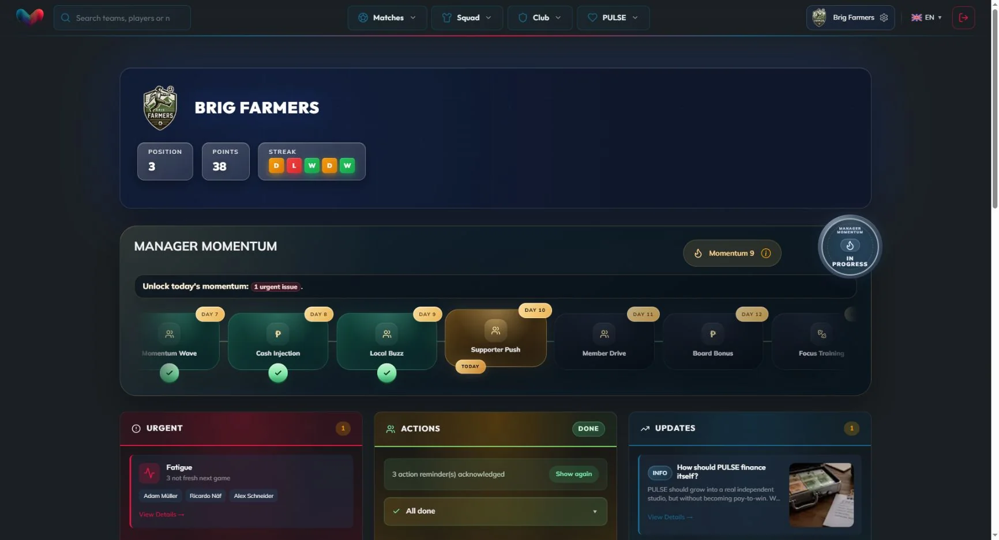
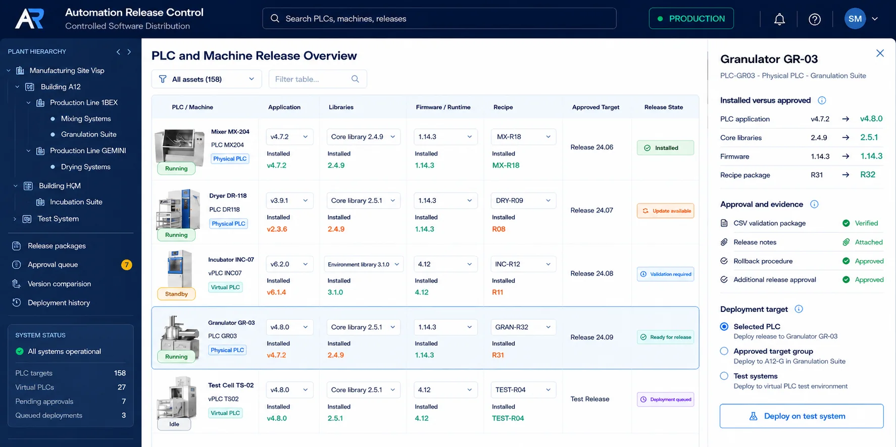

Full stack software for connected industrial products.
I have more than 10 years in software. I build React and TypeScript products, APIs, and edge integrations that connect operators with machines. I own delivery from the first concept through commissioning and production support.
My path
My career grew outward from the machine. Electronics and C gave me the foundations. PLCs and Structured Text brought me into industrial control. .NET and Industry 4.0 connected those systems. Node.js and React now let me build the product end to end.
Read the longer story
2010 to 2012 · Heerbrugg, Switzerland
Learning software through electronics
I began with a Swiss Elektroniker EFZ apprenticeship at libs. The first two years were deliberately practical: soldering, laying out PCBs, reading and drawing basic circuit schematics, and writing C for small electronic systems. I also helped support first year apprentices. That experience taught me two habits early: understand the physical system, and explain the work so another person can repeat it.
People Roland Bruderer
2012 to 2014 · Leica Geosystems and Eaton
From circuits to PLCs and HMIs
During a six month placement at Leica Geosystems, I supported work on laser measurement sensors, drew basic schematics, and built helper circuits. I spent the final year of my apprenticeship at Eaton Automation in St. Gallen. There I joined the PLC and HMI test team, wrote more control software, and built demonstrations for trade fairs. Code was no longer isolated on a bench: it had to read real inputs, drive behavior, present a usable interface, and survive testing.
People Martin Winistörfer, Jürgen Wagner, and Arthur Schmid
2014 to 2017 · Eaton European Innovation Center, Prague
Validation became my software discipline
After the apprenticeship, Eaton hired me as a Software Validation Engineer at its European Innovation Center near Prague. I validated PLCs, HMIs, engineering tools, and industrial communication behavior. I also coordinated test scope with a colleague in Pune: deciding what needed coverage, reviewing results, and resolving gaps. This is where I learned to treat repeatability, traceability, and failure evidence as part of engineering. It was not paperwork added at the end.
My manager, Petr Matousek, encouraged me to strengthen my software foundation. Eaton sponsored my computing studies, which started with an HND in Computing & Systems and continued into a BSc in Computing. I kept working full time: engineering during the day, studying in the evenings. The goal was practical from the start. We wanted to bring modern software stacks into industrial automation.
People Petr Matousek, Federico Perillo, Barbora Krauzová, Karl Rampelt, and Günter Schitinger
2017 to 2020 · Factory of the Future
Turning factory problems into industrial products
I moved from validation into technical product leadership for Eaton’s Factory of the Future program. The program was a partially government funded collaboration with the Czech Institute of Informatics, Robotics and Cybernetics at the Czech Technical University. I led five engineers and two interns, ran agile planning, set priorities, and translated the work into roadmap, feature, funding, and government documentation. I also brought proposals into discussions with product management, executives, sales, customers, and contributing engineering departments.
The goal was not to build one gateway. We were defining a portfolio of products that could connect existing machines to modern factory systems. I conducted technology, market, and profitability research, then tested the product direction in factories. Plant visits showed that installation had to be simple enough for an electrician to complete through guided steps. I turned that finding into an installation concept and a Unity based guidance prototype that I tested with a factory technician.
I remained directly involved in the engineering. I integrated an OPC Foundation SDK into an embedded gateway, developed a CODESYS MQTT library that reached the CODESYS Store, modeled machine states and interfaces, and built a browser visual programming tool with a Python compiler and an embedded C interpreter. I worked with Oxana Kovbasjuková on the Local Control Function and led her initial internship at Eaton. We validated the concepts on approximately 12 live machines across three production plants. The pilots proved the direction under real installation, networking, and production constraints.
People Andrea Kirschner, Paolo D’Amico, Christian Zingg, Michal Horn, Pavel Dedourek, and Prof. Zdeněk Hanzálek
2020 to 2024 · Lonza, Visp
Engineering where reliability is regulated
I moved to the Swiss Alps to work in pharmaceutical manufacturing at Lonza. Across about 30 automation and OT/IT projects, I worked on building automation, access control, gate systems, controlled software deployment, commissioning, validation, and production support. During the COVID manufacturing scale up, my responsibility covered the surrounding building, access, and security infrastructure. I did not own the drug production process.
The work crossed normal department boundaries. I coordinated with operators, QA, security, the on site fire brigade, vendors, and electricians. I delivered training, user manuals, SOPs, validation evidence, change controls, and recovery steps. Lonza reinforced a principle I still use: software is not finished when the code runs. It is finished when people can operate, audit, maintain, and recover the system.
People Franz Albrecht, Fabian Weber, and Daniel Zenhäusern
2023 to 2024 · HABINUM
Learning when not to force a product
With Luca Stillhard, I built HABINUM, a real estate analytics MVP. We spoke with more than 17 local firms before committing further. The discovery was useful because it was uncomfortable: the likely willingness to pay did not support the cost of acquiring customers. We could have spent longer forcing the idea, but the evidence did not justify it. We shut the product down and redirected our effort into PULSE. That experience taught me that early product judgment includes knowing when a business model does not work.
People Luca Stillhard
2024 to 2026 · PULSE
Owning a modern product end to end
Luca Stillhard and I moved our effort into PULSE. It was better aligned with our domain and gained traction much earlier. I built and operated the football management product full time with React, Next.js, TypeScript, Node.js, APIs, data models, deployment, monitoring, analytics, support tooling, and agentic software systems. I owned the path from interface decisions to backend behavior and production recovery.
PULSE brought the earlier stages together. Electronics taught me to respect the physical system. Validation taught me to make behavior observable and repeatable. Industry 4.0 taught me to connect layers. Regulated manufacturing taught me operational responsibility. Product discovery taught me to follow evidence. Full stack engineering now lets me carry those habits from a user problem to a complete production system.
People Luca Stillhard
Selected work
Three systems show the range: connected machines at the edge, a live modern web product, and controlled software releases in regulated manufacturing.

Factory of the Future
Led product strategy and direct engineering for an industrial edge portfolio, then proved the concepts on live machines in three production plants.
Read the case study
PULSE Product Engineering
Built and operated a cross platform football management product across user experience, data models, APIs, deployment, analytics, support, and agentic software tools.
Read the case study
Automation Release Control
Built an Angular, C#, and ASP.NET platform that connected releasable Git versions, deployment, rollback points, and device reported state across more than 150 PLC targets.
Read the case studyWorking stack
Six skill areas describe how I work. Open the detailed view for the technologies and methods behind each one.
- Industrial automation
- Full stack product engineering
- Agentic software systems
- Edge and embedded systems
- Production engineering
- Validation and regulated delivery
View detailed skills
Industrial automation
PLCs, Structured Text, CODESYS, HMI development, OPC UA, MQTT, Modbus TCP and RTU, PROFINET, PROFIBUS, CAN bus, BACnet/IP, and SmartWire DT.
Full stack product engineering
React, Next.js, TypeScript, JavaScript, Node.js, REST APIs, Angular, C#, ASP.NET, SQL, MySQL, PocketBase, responsive UI, and product analytics.
Agentic software systems
Coding agents, specifications, test and review gates, validation loops, bug triage, operational agents, CRM automation, user agents, approval controls, and human escalation.
Edge and embedded systems
Embedded C and C++, FreeRTOS, physical I/O, OPC Foundation SDK integration, machine state modeling, device interfaces, Azure SQL, MES, and scheduling integrations.
Production engineering
Docker, Linux, Git, GitHub Actions, CI/CD, AWS S3, DigitalOcean, Grafana, monitoring, releases, defect investigation, and data recovery.
Validation and regulated delivery
Python test automation, C# test automation, Ranorex, automated reporting, GAMP 5, GMP and CSV, IQ/OQ, FAT/SAT, traceability, change control, audit evidence, SOPs, and commissioning.
About
I am most useful where software crosses a real boundary: from an operator workflow into an API, from an edge device into a factory system, or from a release decision into a verifiable production state.
I am a Swiss software engineer based in Princeton, New Jersey, with a valid U.S. work permit. I am open to relocation and hands on site work.
My background combines current React and TypeScript product engineering with industrial edge systems, electronics, test automation, commissioning, and regulated manufacturing delivery.